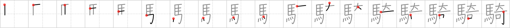

騎
← →
equestrian

Reading:
On-Yomi: キ
Heisig story:
Team of horses . . . strange.
Koohii stories:
1) [radical_tyro] 20-7-2007(153): If the equestrian team used trojan horses, it would be really strange.
2) [Raichu] 26-10-2007(103): Equestrian events are where you get horses to do strange things.
3) [rtkrtk] 17-3-2008(37): Equestrian is a strange word that just means horses.
4) [plumage] 31-5-2009(15): I always thought it was STRANGE that EQUESTRIAN was in the Olympics. Why don't we give the HORSES medals? They do all the work.
5) [Filip] 10-3-2008(8): The St Bernard with his mouth nailed shut is ready to participate in the equesterian race. But he is sitting on a Torjan horse that wont budge.